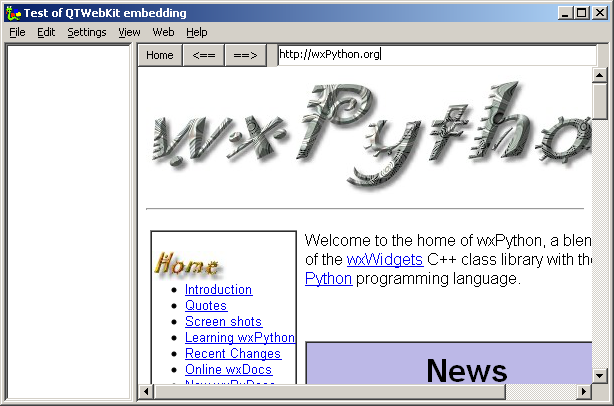
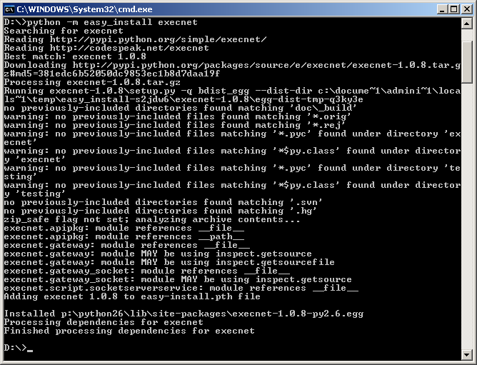
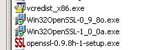
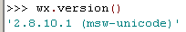

QtWebKit docking (november 2010)
Robbert Mientki
Introduction
If you need a webbrowser within wxPython under Windows, at this moment only the IE-ActiveX component is available. If you want to use another web-engine, like webkit or gecko, there's no solution. Steps are made to make WebKit available under wxPython / windows, but there seems still a lot of effort needed. Another attempt would be the wxWebConnect project from Kirix. which makes the Gecko / XulRunner avaliable under wxWidgets, but afaik there's no one working on the conversion from wxWidgets to wxPython. So here is another wild idea: use QTWebKit and embed the QT application into the wxPython application. On this page we'll describe our efforts to embed QTWebKit, it's not totally completed, but it worls reasonable well.
The wild idea
Create a wxPython application, with a panel on which the WebKit browser should be docked. Instead of docking the WebKit application on the dock-panel, a hole is made in the wxPython application exactly off the size and on the position of that dock-panel. Secondly create a Python QT application that just consists of a windowless WebKit browser. After the QTWebKit has started, move the QT-application into the hole of the wxPython application. Using a hole instead of trying to change the parent of the QTWebKit application has the advantage that this method is platform independent.
Showcase
In the image below, a screen dump of a small wxPython program with embedded QTWebKit is shown. The buttons at the top are not part of the QTWebKit, but are part of the wxPython application, but their events are communicated with the QTWebKit. There's also a movie showing the dynamical bahavior of the total application.

Instal execnet through easy_install

Https / SSL - support
To support https-sited (SSL support) you need to install one of the SSL-support libraries.
For windows there are 2 possibilities, OpenSSL and Win32OpenSSL.
OpenSSL didn't work in our situation.
So we used Win32OpenSSL-0_9_8o which was the latest production version at that time.
When trying to install Win32OpenSSL, it checks if you have MS Visual C++ and if not it asks you to install with the exact version !!
After that https works fluently

